Setting Debugger
J-Link
Before setting J-Link debugger, you need to do some hardware configuration and download images first.
Connect J-Link to the SWD interface.
Refer to the following figure to connect SWCLK pin of J-Link to SWD CLK pin, and SWDIO pin of J-Link to SWD DATA pin.
Connect device to PC after finishing these configurations.
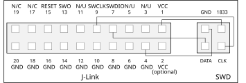
Wiring diagram of connecting J-Link to SWD
Note
J-Link version must be v9 or higher. If Virtual Machine (VM) is used as your platform, make sure that the USB connection setting between VM host and client is correct, so that the VM host can detect the device.
Download images via ImageTool.
ImageTool is a software tool provided by Realtek. For more information, refer to Image Tool.
{kind=link}
Windows
Besides the hardware configuration, J-Link GDB server is also required to install.
For Windows, click and download the software in J-Link Software and Documentation Pack, then install it correctly.
Note
The version of J-Link GDB server below is just an example, you can select the latest version to download.
KM4 Setup
Execute the
cm4_jlink.batDouble-click the
cm4_jlink.batunder{SDK}\amebadplus_gcc_project\utils\jlink_script. You may have to change the path of JLinkGDBServer.exe and JLink.exe in thecm4_jlink.batscript according to your own settings.The started J-Link GDB server looks like below. This window should NOT be closed if you want to download the image or enter debug mode.

KM4 J-Link GDB server connection under Windows
Note
Keep this window active to download the images to target.
Setup J-Link for KM4
Change the working directory to project_km4.
On the MSYS2 terminal, type
$make setup GDB_SERVER=jlinkcommand before selecting J-Link debugger.
KM4 J-Link setup under Windows
KM0 Setup
Execute the
cm0_jlink.batDouble-click the
cm0_jlink.batunder{SDK}\amebadplus_gcc_project\utils\jlink_script, the same as executing thecm4_jlink.bat.The started J-Link GDB server looks like below. This window should NOT be closed if you want to download the image or enter debug mode. Because KM4 will download all the images, you don’t need to connect J-Link to KM0 when downloading images. J-Link can connect to KM0 when debugging.
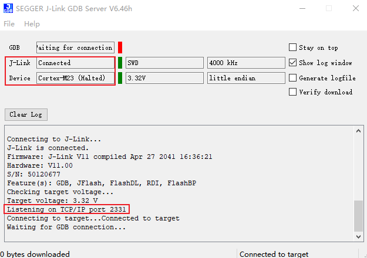
KM0 J-Link GDB server connection under Windows
Setup J-Link for KM0
Change working directory to project_km0.
On the Cygwin terminal, type
$make setup GDB_SERVER=jlinkcommand to select J-Link debugger.
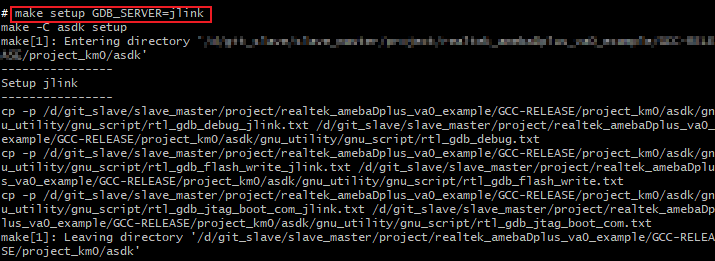
KM0 J-Link setup under Windows
{kind=link}
{kind=link}
KM4 Setup
Execute the
km4_jlink_combination.batDouble-click the
km4_jlink_combination.batunder{SDK}\amebalite_gcc_project\utils\jlink_script. You may have to change the path ofJLinkGDBServer.exeandJLink.exein thekm4_jlink_combination.batscript according to your own settings.The started J-Link GDB server looks like below. This window should NOT be closed if you want to download the image or enter debug mode.

KM4 J-Link GDB server connection under Windows
Caution
Keep this window active to download the images to target.
Setup J-Link for KM4
Change the working directory to project_km4.
On the MSYS2 terminal, type
$make setup GDB_SERVER=jlinkcommand before selecting J-Link debugger.
KM4 J-Link setup under Windows
KR4 Setup
Execute the
kr4_jlink_combination.batDouble-click the
kr4_jlink_combination.batunder{SDK}\amebalite_gcc_project\utils\jlink_script, the same as executing thekm4_jlink_combination.bat.The started J-Link GDB server looks like below. This window should NOT be closed if you want to download the image or enter debug mode. Because KM4 will download all the images, you don’t need to connect J-Link to KR4 when downloading images. J-Link can connect to KR4 when debugging.

KR4 J-Link GDB server connection under Windows
Setup J-Link for KR4
Change working directory to project_kr4.
On the Cygwin terminal, type
$make setup GDB_SERVER=jlinkcommand to select J-Link debugger.
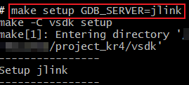
KR4 J-Link setup under Windows
{kind=link}
KM4 Setup
Execute the
km4_jlink_combination.batDouble-click the
km4_jlink_combination.batunder{SDK}\amebalite_gcc_project\utils\jlink_script. You may have to change the path ofJLinkGDBServer.exeandJLink.exein thekm4_jlink_combination.batscript according to your own settings.The started J-Link GDB server looks like below. This window should NOT be closed if you want to download the image or enter debug mode.
KM4 J-Link GDB server connection under Windows
Caution
Keep this window active to download the images to target.
Setup J-Link for KM4
Change the working directory to project_km4.
On the MSYS2 terminal, type
$make setup GDB_SERVER=jlinkcommand before selecting J-Link debugger.
KM4 J-Link setup under Windows
KR4 Setup
Execute the
kr4_jlink_combination.batDouble-click the
kr4_jlink_combination.batunder{SDK}\amebalite_gcc_project\utils\jlink_script, the same as executing thekm4_jlink_combination.bat.The started J-Link GDB server looks like below. This window should NOT be closed if you want to download the image or enter debug mode. Because KM4 will download all the images, you don’t need to connect J-Link to KR4 when downloading images. J-Link can connect to KR4 when debugging.
KR4 J-Link GDB server connection under Windows
Setup J-Link for KR4
Change working directory to project_kr4.
On the Cygwin terminal, type
$make setup GDB_SERVER=jlinkcommand to select J-Link debugger.
KR4 J-Link setup under Windows
KM4 Setup
Execute the
cm4_jlink.batDouble-click the
cm4_jlink.batunder{SDK}\amebasmart_gcc_project\utils\jlink_script. You may have to change the path ofJLinkGDBServer.exein thecm4_jlink.batscript according to your own settings.The started J-Link GDB server looks like below. This window should NOT be closed if you want to download the image or enter debug mode.

KM4 J-Link GDB server connection under Windows
Caution
Keep this window active to download the images to target.
Switch directory to project_hp for KM4
Use
$cdcommand to change the directory to project_hp, then you can input commands in Section Command Lists or GDB Debugger Basic Usage.
KM0 Setup
Execute the
cm0_jlink.batDouble-click the
cm0_jlink.batunder{SDK}\amebasmart_gcc_project\utils\jlink_script, the same as executing thecm4_jlink.bat.The started J-Link GDB server looks like below. This window should NOT be closed if you want to download the image or enter debug mode. Because KM4 will download all the images, you don’t need to connect J-Link to KM0 when downloading images. J-Link can connect to KM0 when debugging.

KM0 J-Link GDB server connection under Windows
Switch directory to project_lp for KM0
Use
$cdcommand to change the directory to project_lp, then you can input command in Section Command Lists or GDB Debugger Basic Usage.
CA32 Setup
The CA32 has two cores named core0 and core1, which can be debugged separately. By default, ca32_jlink_core0.bat is for core0 and ca32_jlink_core1.bat is for core1.
Double-click the
ca32_jlink_core0.batunder{SDK}\amebasmart_gcc_project\utils\jlink_script.The started J-Link GDB server looks like below. CA32 core0 listens on port 2337 by default. This GDB Server window should NOT be closed if you want to enter debug mode.

CA32 core0 J-Link GDB server connection under Windows
Double click the
ca32_jlink_core1.batunder{SDK}\amebasmart_gcc_project\utils\jlink_script.The started J-Link GDB server looks like below. CA32 core1 listens on port 2339 by default.

CA32 core1 J-Link GDB server connection under Windows
Caution
When opening core1 GDB server, core0 and core1 will halt and can’t run together. Open this window only when you want to debug two cores together, and you know what you are doing.
To debug core0 and core1 separately, make sure that function
EnabelCrossTrigger()is commented out as below.
void InitTarget(void) {
Report("******************************************************");
Report("J-Link script: AmebaSmart (Cortex-A32 CPU0) J-Link script");
Report("******************************************************");
…
//EnabelCrossTrigger(); // comment out if needed
}
Linux
For J-Link GDB server, click and download the software in J-Link Software and Documentation Pack. It is suggested to use Debian package manager to install the Debian version.
Open a new terminal and type the following command to install GDB server. After the installation of the software pack, there is a tool named “JLinkGDBServer” under the J-Link directory. Take Ubuntu 18.04 as an example, the JLinkGDBServer can be found at /opt/SEGGER/JLink.
$dpkg –i jlink_6.0.7_x86_64.deb
Note
The version of J-Link GDB server below is just an example, you can select the latest version to download.
KM4 Setup
Connect to KM4
Open a new terminal under directory
/amebadplus_gcc_project/utils/jlink_script, and type$/opt/SEGGER/JLink/JLinkGDBServer -select USB-device Cortex-M33 -if SWD -scriptfileAP2_KM4.JLinkScript port 2335.
KM4 J-Link GDB server connection setting under Linux
If the connection is successful, the log is shown as below. This terminal should NOT be closed if you want to download software or enter GDB debugger mode.
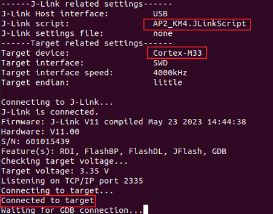
KM4 J-Link GDB server connection success under Linux
Setup J-Link for KM4
Open a new terminal under project_km4 folder, and type
$make setup GDB_SERVER=jlinkcommand before using J-Link to download software or enter GDB debugger.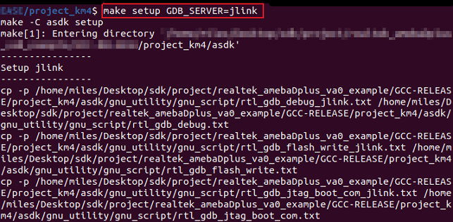
KM4 J-Link terminal setup under Linux
{kind=link}
{kind=link}
KM0 Setup
Connect to KM0
Open a new terminal under directory
/amebadplus_gcc_project/utils/jlink_script, and type$/opt/SEGGER/JLink/JLinkGDBServer -select USB -device Cortex-M23 -if SWD -scriptfile AP1_KM0.JLinkScript port 2331.
KM0 J-Link GDB server connection setting under Linux
If the connection is successful, the log is shown below.

KM0 J-Link GDB server connection success under Linux
Setup J-Link for KM0
Open a new terminal under project_km0, and type
$make setup GDB_SERVER=jlinkcommand before using J-Link to download software or enter GDB debugger.
KM0 J-Link terminal setup under Linux
KM4 Setup
Connect to KM4
Open a new terminal under
amebalite_gcc_project/utils/jlink_script, and type$/opt/SEGGER/JLink/JLinkGDBServer -select USB-device Cortex-M33 -if SWD -scriptfile AP0_KM4.JLinkScript port 2335.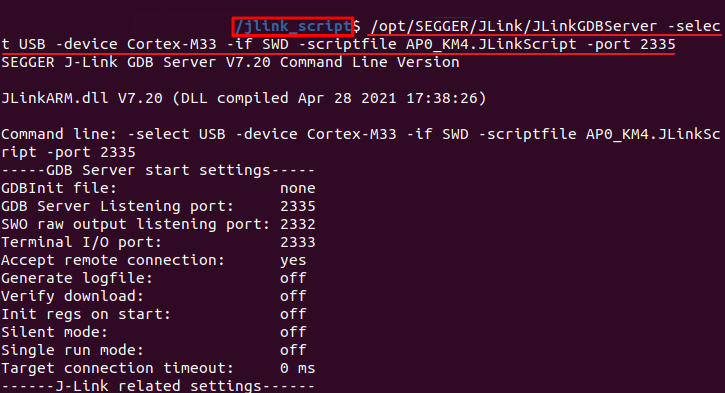
KM4 J-Link GDB server connection setting under Linux
If the connection is successful, the log is shown as below. This terminal should NOT be closed if you want to download software or enter GDB debugger mode.
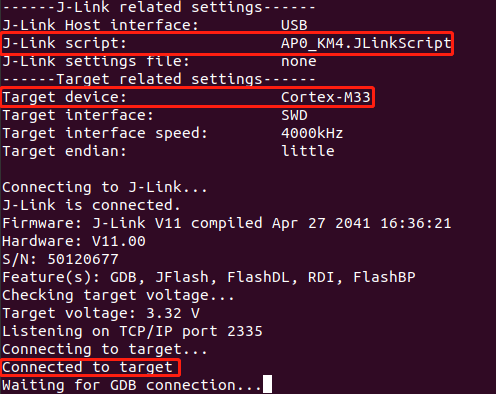
KM4 J-Link GDB server connection success under Linux
Setup J-Link for KM4
Open a new terminal under project_km4 folder, and type
$make setup GDB_SERVER=jlinkcommand before using J-Link to download software or enter GDB debugger.
KM4 J-Link terminal setup under Linux
{kind=link}
{kind=link}
KR4 Setup
Connect to KM4
Before connecting to KR4, open a new terminal under
amebalite_gcc_project/utils/jlink_script, and type$/opt/SEGGER/JLink/ JLinkExe -device Cortex-M33 -if swd -autoconnect 1 -speed 1000 -JLinkScriptFile KM4_SEL.JLinkScriptto connect to KM4 by J-Link at first.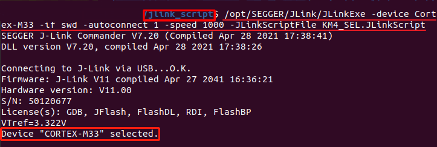
KM4 J-Link connection setting under Linux
If the connection is successful, the log is shown as below.

KM4 J-Link connection success under Linux
Connect to KR4
After KM4 is connected by J-Link successfully, open a new terminal under the same working directory and type
$/opt/SEGGER/JLink/JLinkGDBServer -select USB-device RV32 -if cjtag -port 2331to connect to KR4.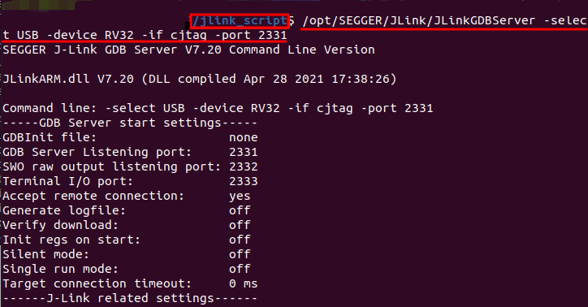
KR4 J-Link GDB server connection setting under Linux
If the connection is successful, the log is shown as below. This terminal should NOT be closed if you want to download software or enter GDB debugger mode. And it is OK to close the J-Link window of KM4.

KR4 J-Link GDB server connection success under Linux
Setup J-Link for KR4
Open a new terminal under project_kr4, and type
$make setup GDB_SERVER=jlinkcommand before using J-Link to download software or enter GDB debugger.
KR4 J-Link terminal setup under Linux
{kind=link}
{kind=link}
KM4 Setup
Connect to KM4
Open a new terminal under
amebalite_gcc_project/utils/jlink_script, and type$/opt/SEGGER/JLink/JLinkGDBServer -select USB-device Cortex-M33 -if SWD -scriptfile AP0_KM4.JLinkScript port 2335.KM4 J-Link GDB server connection setting under Linux
If the connection is successful, the log is shown as below. This terminal should NOT be closed if you want to download software or enter GDB debugger mode.
KM4 J-Link GDB server connection success under Linux
Setup J-Link for KM4
Open a new terminal under project_km4 folder, and type
$make setup GDB_SERVER=jlinkcommand before using J-Link to download software or enter GDB debugger.
KM4 J-Link terminal setup under Linux
KR4 Setup
Connect to KM4
Before connecting to KR4, open a new terminal under
amebalite_gcc_project/utils/jlink_script, and type$/opt/SEGGER/JLink/ JLinkExe -device Cortex-M33 -if swd -autoconnect 1 -speed 1000 -JLinkScriptFile KM4_SEL.JLinkScriptto connect to KM4 by J-Link at first.KM4 J-Link connection setting under Linux
If the connection is successful, the log is shown as below.
KM4 J-Link connection success under Linux
Connect to KR4
After KM4 is connected by J-Link successfully, open a new terminal under the same working directory and type
$/opt/SEGGER/JLink/JLinkGDBServer -select USB-device RV32 -if cjtag -port 2331to connect to KR4.KR4 J-Link GDB server connection setting under Linux
If the connection is successful, the log is shown as below. This terminal should NOT be closed if you want to download software or enter GDB debugger mode. And it is OK to close the J-Link window of KM4.
KR4 J-Link GDB server connection success under Linux
Setup J-Link for KR4
Open a new terminal under project_kr4, and type
$make setup GDB_SERVER=jlinkcommand before using J-Link to download software or enter GDB debugger.
KR4 J-Link terminal setup under Linux
KM4 Setup
Open a new terminal under
{SDK}/amebasmart_gcc_project/utils/jlink_script.Type
$/opt/SEGGER/JLink/JLinkGDBServer -device cortex-m33 -if SWD -scriptfile AP1_KM4.JLinkScript -port 2335. This terminal should NOT be closed if you want to download software or enter GDB debugger mode.
If the connection is successful, the log is shown as below.

KM4 J-Link GDB server connection success
KM0 Setup
Open a new terminal under
{SDK}/amebasmart_gcc_project/utils/jlink_script.Type
$/opt/SEGGER/JLink/JLinkGDBServer -device cortex-m23 -if SWD -scriptfile AP0_KM0.JLinkScript -port 2331.This terminal should NOT be closed if you want to download software or enter GDB debugger mode.
If the connection is successful, the log is shown as below.

KM0 J-Link GDB server connection success
CA32 Setup
For CA32 core0:
Open a new terminal under
{SDK}/amebasmart_gcc_project/utils/jlink_script.Type
$/opt/SEGGER/JLink/JLinkGDBServer -device cortex-a32 -if SWD -scriptfile AP3_CA32_Core0.JLinkScript -port 2337. This terminal should NOT be closed if you want to download software or enter GDB debugger mode.
If the connection is successful, the log is shown as below.
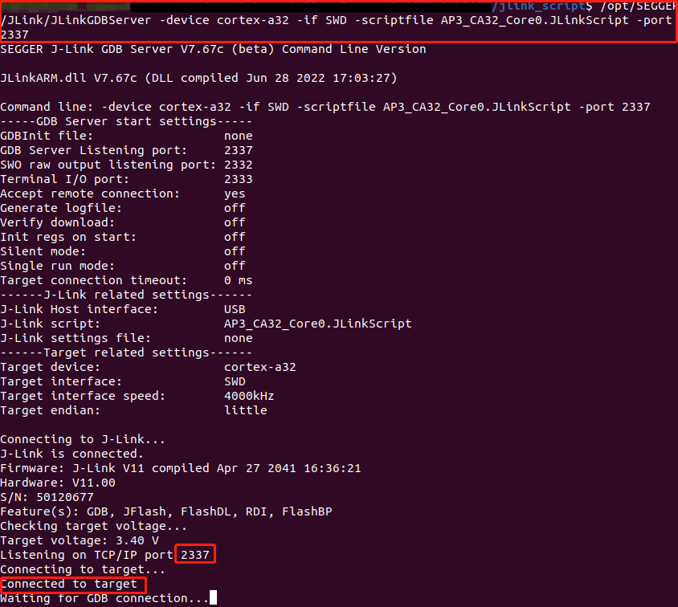
CA32 core0 J-Link GDB server connection
For CA32 core1:
Open a new terminal under
{SDK}/amebasmart_gcc_project/utils/jlink_script.Type
$/opt/SEGGER/JLink/JLinkGDBServer -device cortex-a32 -if SWD -scriptfile AP3_CA32_Core1.JLinkScript -port 2339. This terminal should NOT be closed if you want to download software or enter GDB debugger mode.
If the connection is successful, the log is shown as below.

CA32 core1 J-Link GDB server connection under Linux
{kind=link}
Downloading Image to Flash by GDB
To download software into Device Board by GDB, make sure the steps mentioned in Section Building Code are done, and then type $make flash command on MSYS2 (Windows) or terminal (Linux).
This command downloads the software into Flash and it will take several seconds to finish, as shown below.
{kind=link}
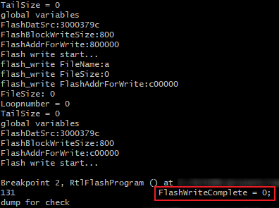
Downloading Image to Flash
{kind=link}
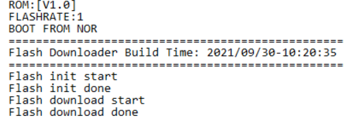
Download codes success log
Images are downloaded only under KM4. To check whether the image is downloaded correctly into memory, you can select verify download before downloading images, and during image download process, verified OK log will be shown.
{kind=link}
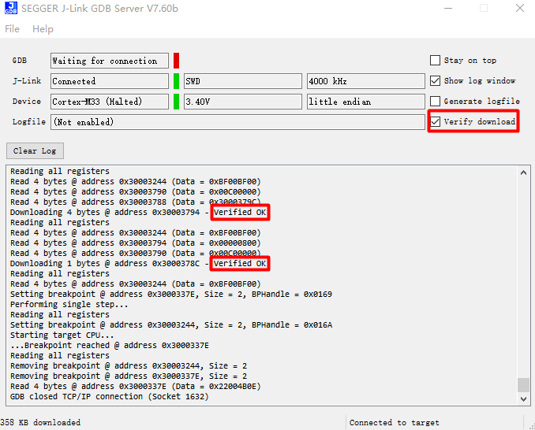
Verify download
After download is successful, press the Reset button and you will see that the device boots with the new image.
Note
Only executing command under KM4 project is needed, because KM4 will download all the images.
Entering Debug Mode
GDB Server
To enter GDB debugger mode, follow the steps below:
Make sure that the steps mentioned in Sections Configuring SDK to Setting Debugger are finished, then reset the device.
Change the directory to target project, and type
$make debugon MSYS2 (Windows) or terminal (Linux).
J-Link
Steps
Press Win+R on your keyboard, or find and click Run on the Start menu.
Type
cmdin the Run window and click OK to open the Command Prompt terminal in a new window.Copy the J-Link script command below for the specific target:
For KM4:
"{Jlink_path}\JLink.exe" -device Cortex-M33 -if SWD -speed 4000 -autoconnect 1
For KM0:
"{Jlink_path}\JLink.exe" -device Cortex-M23 -if SWD -speed 4000 -autoconnect 1
For KM4:
"{Jlink_path}\JLink.exe" -device Cortex-M33 -if SWD -speed 4000 -autoconnect 1
For KR4:
First:
"{Jlink_path}\JLink.exe" -device Cortex-M33 -if SWD -speed 4000 -autoconnect 1 -JLinkScriptFile {script_path}\KM4_SEL.JLinkScript
Then:
"{Jlink_path}\JLink.exe" -device RV32 -if cjtag -speed 4000 -JTAGConf -1,-1 -autoconnect 1
From KR4 to KM4:
First:
"{Jlink_path}\JLink.exe" -device RV32 -if cjtag -speed 4000 -JTAGConf -1,-1 -JLinkScriptFile {script_path}\KR4_DMI.JLinkScript
Then:
"{Jlink_path}\JLink.exe" -device Cortex-M33 -if SWD -speed 4000 -autoconnect 1
For KM4:
"{Jlink_path}\JLink.exe" -device Cortex-M33 -if SWD -speed 4000 -autoconnect 1 -JLinkScriptFile {script_path}\AP1_KM4.JLinkScript
For KM0:
"{Jlink_path}\JLink.exe" -device Cortex-M23 -if SWD -speed 4000 -autoconnect 1 -JLinkScriptFile {script_path}\AP0_KM0.JLinkScript
For CA32 core0:
"{Jlink_path}\JLink.exe" -device Cortex-A32 -if SWD -speed 4000 -autoconnect 1 -JLinkScriptFile {script_path}\AP3_CA32_Core0.JLinkScript
For CA32 core1:
"{Jlink_path}\JLink.exe" -device Cortex-A32 -if SWD -speed 4000 -autoconnect 1 -JLinkScriptFile {script_path}\AP3_CA32_Core1.JlinkScript
Commands
The following commands are often used when the program is stuck. All commands are accepted case insensitive.
Command (long) |
Command (short) |
Syntax |
Description |
|---|---|---|---|
Halt |
H |
Halt CPU |
|
Go |
G |
Start CPU if halted |
|
Mem |
Mem <Addr> <NumBytes> |
Read memory and show corresponding ASCII values |
|
SaveBin |
SaveBin <FileName> <Addr> <NumBytes> |
Save target memory range into binary file |
|
Exit |
Close J-Link connection and quit |
For more information, you can visit https://wiki.segger.com/J-Link_Commander.
Note
You can type
HandGseveral times and record the PC, then look for the PC in which function in asm file. This function might be where you get stuck.You can also use
memto dump some address aftersp, from these addresses you can find the function call stack.
Command Lists
The commands mentioned above are listed in the following table.
Usage |
Command |
Description |
|---|---|---|
all |
|
Compile the project to generate ram_all.bin |
setup |
|
Select GDB_SERVER |
flash |
|
Download ram_all.bin to Flash |
clean |
|
Remove compile file (xx.bin, xx.o, …) |
debug |
|
Enter debug mode |
GDB Debugger Basic Usage
GDB, the GNU project debugger, allows you to examine the program while it executes, and it helps catch bugs. Section Entering Debug Mode has described how to enter GDB debugger mode, and this section illustrates some basic usage of GDB commands.
For more information on GDB debugger, click https://www.gnu.org/software/gdb/. The following table describes commonly used instructions and their functions, and specific usage can be found in GDB User Manual of website https://www.sourceware.org/gdb/documentation/.
Usage |
Command |
Description |
|---|---|---|
Breakpoint |
$break |
Breakpoints are set with the break command (abbreviated b). The usage can be found at Setting Breakpoints section. |
Watchpoint |
$watch |
You can use a watchpoint to stop execution whenever the value of an expression changes. The related commands include watch, rwatch, and awatch. The usage of these commands can be found at Setting Watchpoints section. Note Keep the range of watchpoints less than 20 bytes. |
Print breakpoints & watchpoints |
$info |
To print a table of all breakpoints, watchpoints set and not deleted, use the info command. You can simply type info to know its usage. |
Delete breakpoints |
$delete |
To eliminate the breakpoints, use the delete command (abbreviated d). The usage can be found at Deleting Breakpoints section. |
Continue |
$continue |
To resume program execution, use the continue command (abbreviated c). The usage can be found at Continue and Stepping section. |
Step |
$step |
To step into a function call, use the step command (abbreviated s). It will continue running your program until the control reaches a different source line. The usage can be found at Continue and Stepping section. |
Next |
$next |
To step through the program, use the next command (abbreviated n). The execution will stop when the control reaches a different line of code at the original stack level. The usage can be found at Continue and Stepping section. |
Quit |
$quit |
To exit GDB debugger, use the quit command (abbreviated q), or type an end-of-file character (usually Ctrl-d). The usage can be found at Quitting GDB section. |
Backtrace |
$backtrace |
A backtrace is a summary of how your program got where it is. You can use backtrace command (abbreviated bt) to print a backtrace of the entire stack. The usage can be found at Backtraces section. |
Print source lines |
$list |
To print lines from a source file, use the list command (abbreviated l). The usage can be found at Printing Source Lines section. |
Examine data |
To examine data in your program, you can use print command (abbreviated p). It evaluates and prints the value of an expression. The usage can be found at Examining Data section. |